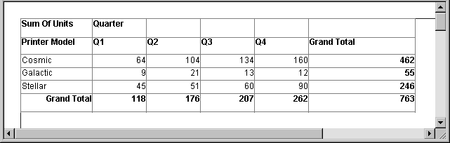
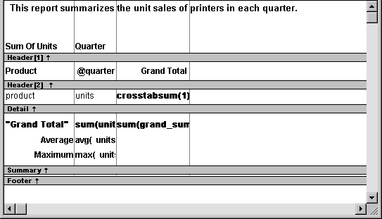
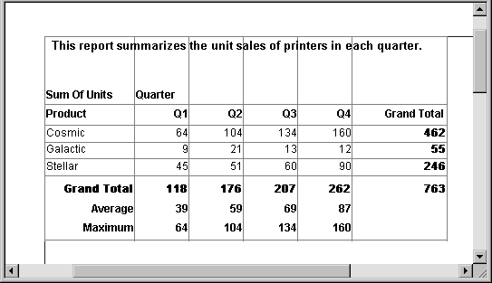
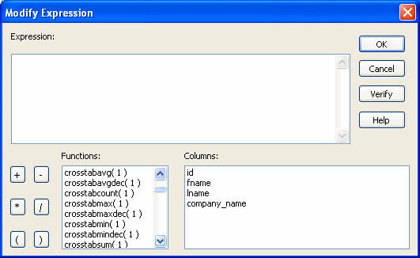
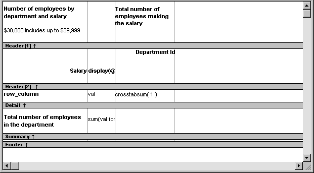
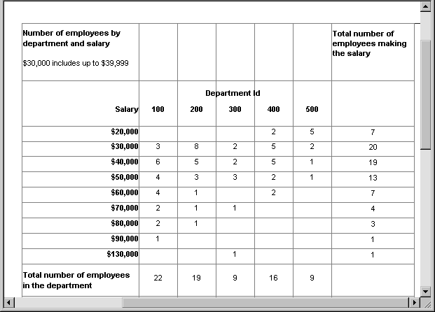
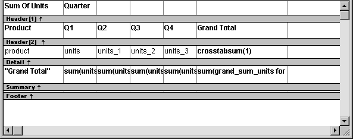
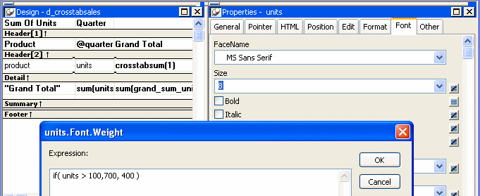
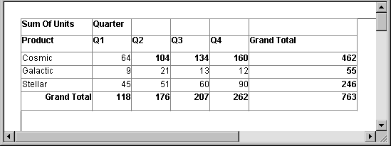

When you have provided the data definitions, the crosstab is functional, but you can enhance it before using it. Because a crosstab is a grid DataWindow object, you can enhance a crosstab using the same techniques you use in other DataWindow objects. For example, you can:
For more on these and the other standard enhancements you can make to DataWindow objects, see Chapter 19, "Enhancing DataWindow Objects ."
The rest of this section covers topics either unique to crosstabs or especially important when working with crosstabs:
Crosstabs are implemented as grid DataWindow objects, so you can specify the following grid properties for a crosstab:
 To specify the crosstab's basic properties:
To specify the crosstab's basic properties:
In the Properties view, select the General tab.
Specify basic crosstab properties.
Table 27-2 lists basic crosstab properties.
When you initially define the crosstab, you associate the crosstab rows and columns with columns in a database table or other data source. You can change the associated data anytime in the Crosstab Definition dialog box.
 To open the Crosstab Definition dialog box:
To open the Crosstab Definition dialog box:
Position the mouse below the footer band in the workspace and display the pop-up menu.
Select Crosstab from the pop-up menu.
The Crosstab Definition dialog box displays.
 To modify the data associated with a crosstab:
To modify the data associated with a crosstab:
In the Crosstab Definition dialog box, fill in the boxes for Columns, Rows, and Values as described in "Associating data with a crosstab ".
Click OK.
Sometimes names of columns in the database might not be meaningful. You can change the names that are used to label rows and columns in crosstabs so that the data is easier to understand.
 To change the names used in crosstabs:
To change the names used in crosstabs:
In the Crosstab Definition dialog box, double-click the name of the column in the Source Data box.
The New Name dialog box displays:
Specify the name you want used to label the corresponding column. You can have multiple-word labels by using underscores: underscores are replaced by spaces in the Design view and at runtime.
Click OK.
PowerBuilder changes the column name in the Source Data box and anywhere else the column is used.
For example, if you want the product column to be labeled Printer Model, double-click product in the Crosstab Definition dialog box and specify printer_model in the New Name dialog box.
When the crosstab runs, you see this:

When you generate a crosstab, the columns and rows are automatically totaled for you. You can include other statistical summaries in crosstabs as well. To do that, you place computed fields in the workspace.
 To define a column summary:
To define a column summary:
Enlarge the summary band to make room for the summaries.
Select Insert>Control>Computed Field from the menu bar.
Click the cell in the summary band where you want the summary to display.
The Modify Expression dialog box displays.
Define the computed field.
For example, if you want the average value for a column, specify avg(units for all), where units is the column providing the values in the crosstab.
For example, this is a crosstab that has been enhanced to show averages and maximum values for each column. This is the Design view:

This is the crosstab at runtime:

 To define a row summary:
To define a row summary:
Select Insert>Control>Computed Field from the menu bar.
Click the empty cell to the right of the last column in the detail band.
The Modify Expression dialog box displays.
Define the computed field. You should use one of the crosstab functions, described next.
There are nine special functions you can use only in crosstabs: CrosstabAvg, CrosstabAvgDec, CrosstabCount, CrosstabMax, CrosstabMaxDec, CrosstabMin, CrosstabMinDec, CrosstabSum, and CrosstabSumDec.
These functions are listed in the Functions box when you define a computed field in a crosstab:

Each of these functions returns the corresponding statistic about a row in the crosstab (average, count, maximum value, minimum value, or sum). You place computed fields using these functions in the detail band in the Design view. Use the functions with the Dec suffix when you want to return a decimal datatype.
By default, PowerBuilder places CrosstabSum and CrosstabSumDec in the detail band, which returns the total for the corresponding row.
Each of these functions takes one numeric argument, which refers to the expression defined for Values in the Crosstab Definition dialog box. The first expression for Values is numbered 1, the second is numbered 2, and so on.
Generally, crosstabs have only one expression for Values, so the argument for the crosstab functions is 1. So, for example, if you defined sum(units for crosstab) as your Values expression, PowerBuilder places CrosstabSum(1) in the detail band.
If you want to cross-tabulate both total unit sales and a projection of future sales, assuming a 20 percent increase in sales (that is, sales that are 1.2 times the actual sales), you define two expressions for Values:
sum(units for crosstab)
sum(units * 1.2 for crosstab)
Here CrosstabSum(1) returns the total of sum(units for crosstab) for the corresponding row. CrosstabSum(2) returns the total for sum(units * 1.2 for crosstab).
For complete information about defining computed fields, see Chapter 19, "Enhancing DataWindow Objects ."
For more about the crosstab functions, see the DataWindow Reference .
You can build a crosstab where each row tabulates a range of values, instead of one discrete value, and you can make each column in the crosstab correspond to a range of values.
For example, in cross-tabulating departmental salary information, you might want one row in the crosstab to count all employees making between $30,000 and $40,000, the next row to count all employees making between $40,000 and $50,000, and so on.
 To cross-tabulate ranges of values:
To cross-tabulate ranges of values:
Determine the expression that results in the raw values being converted into one of a small set of fixed values.
Each of those values will form a row or column in the crosstab.
Specify the expression in the Columns or Rows box in the Crosstab Definition dialog box.
You choose the box depending on whether you want the columns or rows to correspond to the range of values.
In the Values column, apply the appropriate aggregate function to the expression.
This is best illustrated with an example.
You want to know how many employees in each department earn between $30,000 and $40,000, how many earn between $40,000 and $50,000, how many earn between $50,000 and $60,000, and so on. To do this, you want a crosstab where each row corresponds to a $10,000 range of salary.
The first step is to determine the expression that, given a salary, returns the next smaller salary that is a multiple of $10,000. For example, given a salary of $34,000, the expression would return $30,000, and given a salary of $47,000, the expression would return $40,000. You can use the Int function to accomplish this, as follows:
int(salary/10000) * 10000
That expression divides the salary by 10,000 and takes the integer portion, then multiplies the result by 10,000. So for $34,000, the expression returns $30,000, as follows:
34000/10000 = 3.4
int(3.4) = 3
3 * 10000 = 30000
With this information you can build the crosstab. The following uses the Employee table in the EAS Demo DB:
int(salary/10000) * 10000
count(int(salary/10000) * 10000 for crosstab)


You can see, for example, that 2 people in department 400 and 5 in department 500 earn between $20,000 and $30,000.
In the preceding crosstab, several of the cells in the grid are blank. There are no employees in some salary ranges, so the value of those cells is null. To make the crosstab easier to read, you can add a display format to fields that can have null values so that they display a zero.
 To display blank values in a crosstab as zero:
To display blank values in a crosstab as zero:
Select the column you want to modify and click the Format tab in the Properties view.
Replace [General] in the Format box with ###0;###0;0;0.
The fourth section in the mask causes a null value to be represented as zero.
By default, crosstabs are dynamic: when you run them, PowerBuilder retrieves the data and dynamically builds the columns and rows based on the retrieved data. For example, if you define a crosstab that computes sales of printers and a new printer type is entered in the database after you define the crosstab, you want the new printer to be in the crosstab. That is, you want PowerBuilder to build the rows and columns dynamically based on current data, not the data that existed when the crosstab was defined.
Occasionally, however, you might want a crosstab to be static. That is, you want its columns to be established when you define the crosstab. You do not want additional columns to display in the crosstab at runtime; no matter what the data looks like, you do not want the number of columns to change. You want only the updated statistics for the predefined columns. The following procedure shows how to do that.
 To create a static crosstab:
To create a static crosstab:
In the wizard page or in the Crosstab Definition dialog box, clear the Rebuild Columns At Runtime check box.
Define the data for the crosstab as usual, and click OK.
With the check box cleared, instead of immediately building the crosstab's structure, PowerBuilder first retrieves the data from the database. Using the retrieved data, PowerBuilder then builds the crosstab structure and displays the workspace. It places all the values for the column specified in the Columns box in the workspace. These values become part of the crosstab's definition.
For example, in the following screenshot, the four values for Quarter (Q1, Q2, Q3, and Q4) are displayed in the Design view:

At runtime, no matter what values are in the database for the column, the crosstab shows only the values that were specified when the crosstab was defined. In the printer example, the crosstab always has the four columns it had when it was first defined.
You can modify the properties of any of the columns in a static crosstab. You can modify the properties of each column individually, since each column is displayed in the workspace as part of the crosstab's definition. For example, in the printer crosstab you can directly modify the way values are presented in each individual quarter, since each quarter is represented in the Design view. (The values are shown as units, units_1, units_2, and units_3.)
As with other DataWindow objects, you can specify property conditional expressions to modify properties at runtime. You can use them with either dynamic or static crosstabs. With dynamic crosstabs, you specify an expression once for a column or value, and PowerBuilder assigns the appropriate properties when it builds the individual columns at runtime. With static crosstabs, you have to specify an expression for each individual column or value, because the columns are already specified at definition time.
In the following crosstab, an expression has been specified for Units:

The expression is for the Font.Weight property of the units column:
if (units > 100, 700, 400)
The expression specifies to use bold font (weight = 700) if the number of units is greater than 100. Otherwise, use normal font (weight = 400).
This is the crosstab at runtime:

Values larger than 100 are shown in bold.
For more information about property conditional expressions, see Chapter 24, "Highlighting Information in DataWindow Objects."